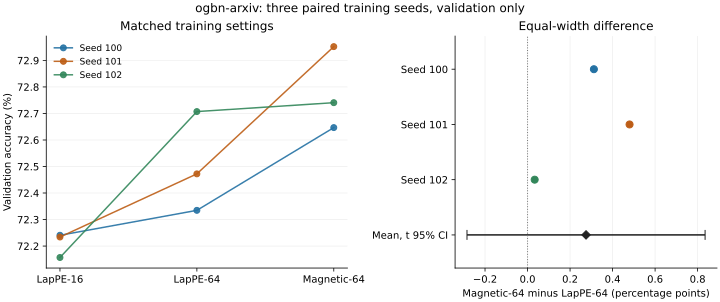

Spectral positional encodings for directed graph transformers
I investigated magnetic Laplacian features on a citation graph, then gave the baseline the same number of channels. The remaining advantage was small and inconclusive.
Read the project